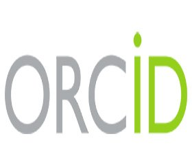
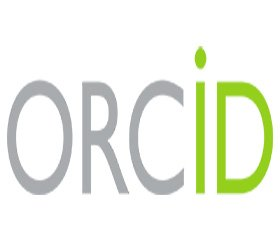
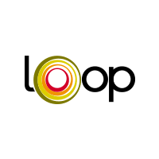
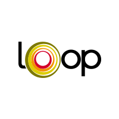

Permanent researchers
- Vincent Frouin HdR
 

- Cathy Philippe PhD
PostDocs
- Slim Karkar PhD (2018-present)
 

PhD Students
- Arnaud Gloaguen (2016-present)
- Angeline Mihailov (2018-present)
- Yasmina Mekki (2018-present)
Research Engineers
- Helene Urien PhD (2018-present)
- Thomas Riquelme MSc (2018-present)
Interns
Alumni
- Hugo Stalla-Bourdillon (Internship Centrale-Supelec 2017)
- Solène Julien-Brohard (PhD 2014-2017) co-supervision V Frouin, Ch Batail (CNRGH/CEA) E Le Floch (CNRGH/CEA)
- Yann Le Guen (PhD 2015-2018) supervisor V Frouin
- Nicolas Guigui (Internship Centrale-Supelec 2018)